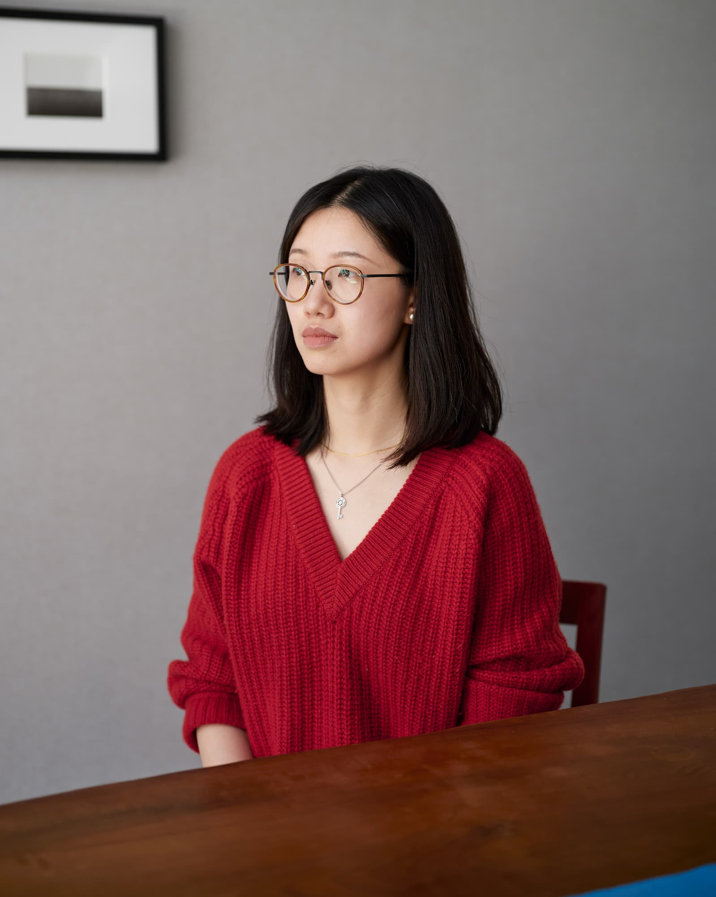

Bio
Althea Rao is an artist and researcher working critically with data as infrastructure, participatory systems and multispecies intelligence. Her practice explores the intersection of computation, materiality, performance and collective agency, often engaging audiences in playful, embodied interactions that challenge dominant narratives and systemic power structures.
Rao has lived and worked in China, Japan, and the U.S., with a background in journalism, media arts, and filmmaking. She holds PhD of Digital Arts and Experimental Media from University of Washington, and her work has been supported by fellowships and residencies at tiat x Mozilla Foundation, the Coalesce Center of Biological Arts, Seattle Opera, MIT Feminist Future(s) Hackathon, Theater MITU Hybrid Art Lab, More Art, Artspace New Haven, Flaherty Film Seminar, NYFA, Signal Culture, and Halcyon Arts Lab.
In addition to her artistic practice, she writes for Chinese readers about gender justice and translates manifestos, film scripts, poetry and resources for domestic violence survivors between English and Chinese. Rao is an Assistant Professor of Digital Media Art with a focus on creative code and AI at San Jose State University.